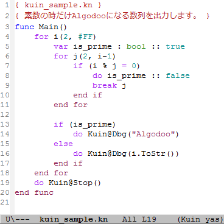

kuin-mode.el (Kuin用 Emacs設定ファイル)
シンタックスハイライト定義ファイル
Last Modified: 2013/03/24 09:03:51.
日本語(Japanese), English
概要
kuin-mode.elは、Kuin用のEmacs設定ファイルです。
自作言語Kuin 言語仕様Ver.0.03 @ Tes.Soを参考に作成しました。
※Kuinは、くいなちゃん(@kuina_tesso)が考案したプログラミング言語です。
|
【使用イメージ】  (画像をクリックするとソースコードが表示されます) |
ダウンロード
【自己責任でご利用下さい】
2012/10/01 更新 (更新7度目)
既知の問題点：
- ネストされたコメントに未対応。
- コメント中の文字列に未対応。
kuin-mode.el
Kuin用 yasnippet 設定ファイルをインストールするとさらに便利です。
インストール手順
- ダウンロードした kuin-mode.el を.emacsのload-pathで指定されたフォルダに置いてください。
- .emacs (.emacs.d)に次の5行を追加してください。
- ; Settings for Kuin
- (autoload 'kuin-mode "kuin-mode" nil t)
- (add-hook 'kuin-mode-hook '(lambda () (font-lock-mode 1)))
- (setq auto-mode-alist
- (cons (cons "\\.kn$" 'kuin-mode) auto-mode-alist))
更新履歴 / 古いバージョンの入手
更新履歴 を御覧ください。
不具合について
不具合を発見された場合、@tatt61880にご連絡頂けると幸いです。
匿名希望の場合は、interviews経由で指摘頂いても構いません。
その他
Kuin関連ページの紹介
Copyright (C) Tatt(タット) ---- Twitterアカウント @tatt61880